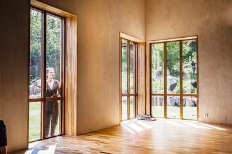
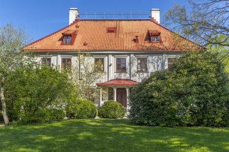

Scenkonst Gerlesborg är en mötesplats för scenkonstnärer och andra som är intresserade av hur man på scenen kan vara i stunden och nå den skapande punkten. PanJál och Scenstudion i Gerlesborg samarbetar i dagslägen genom föreställningsarbete och undervisning.

Gathenhielmska Huset är en kulturmiljö med konstnärlig och kulturell verksamhet under utveckling. Historieverket bedriver verksamhet och samverkan samt skapar ett konstnärligt program i mötet mellan då och nu för att öppna upp Gathenhielmska Huset för allmänheten. Verksamheten riktar sig mot hela staden med platsutveckling samt lokala och internationella platsspecifika scenkonstproduktioner. PanJál är en av platserna för detta skapande.